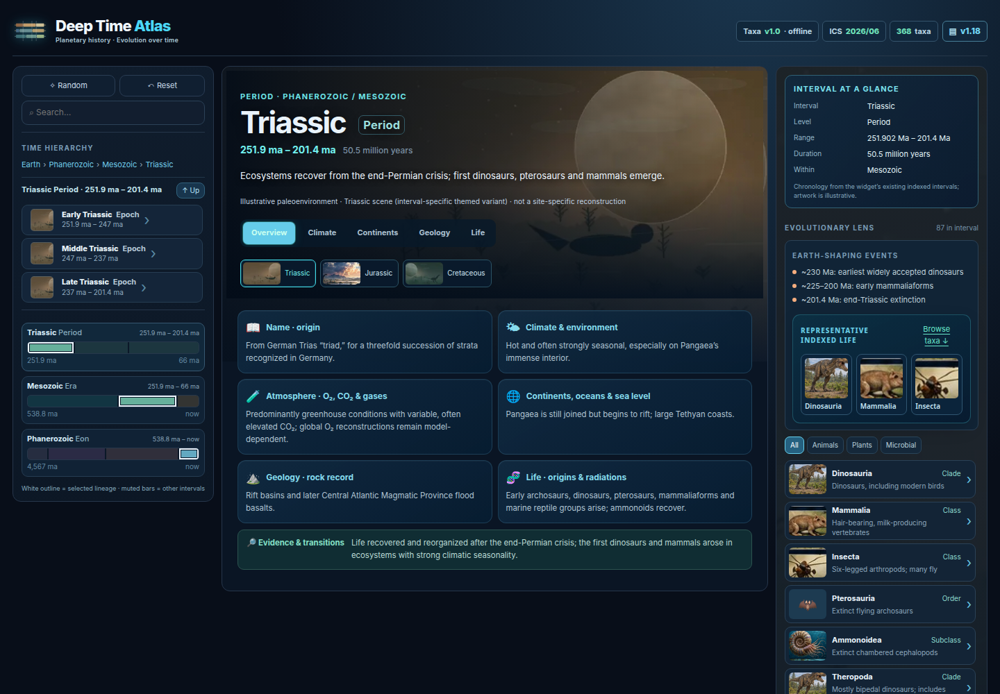

Actual · fresh browser capture

Original widget source unchanged. External HTTP(S) requests blocked for this offline capture.
Goal reference
goal_1.png · approved visual direction

goal_2.png · approved visual direction

Complete · 7
- WL-001 · p1 · done
Import and verify the Atlas baseline. - WL-003 · p1 · done
Maintain a categorized, prioritized live backlog. - WL-004 · p1 · done
Produce actual-versus-goal evidence and open it in feh. - WL-005 · p1 · done
Exercise Atlas browser interactions before visual refactoring. - WL-010 · p1 · done
Guard browser evidence against incomplete coverage and stale sources. - T018 · p1 · done
Verify existing: Click neighboring intervals to navigate. - T022 · p1 · done
Verify existing: Distinct Overview/Climate/Continents/Geology/Life content presentation.
Pending / verify · 30
- WL-006 · p1 · approved
Refine the goal-image layout without scientific regressions. - T001 · p1 · needs-verification
Verify existing: Retain compact one-line title/subtitle with responsive natural wrap. - T005 · p1 · needs-verification
Verify existing: Preserve historical changelog entries and click-to-expand version control. - T006 · p1 · needs-verification
Verify existing: Compact statistics typography and balanced rows. - T010 · p1 · proposed
Automate regression for header, popup, versions and mobile breakpoints. - T002 · p1 · proposed
Apply consistent navy gradient with subtle colored subject identity. - T003 · p1 · proposed
Match illustrated reference icon scale and clarity. - T004 · p1 · needs-verification
Verify existing: Align version and data chips, equal control heights. - T007 · p1 · needs-verification
Verify existing: Unify overlay spacing and one-row title/close control. - T008 · p1 · proposed
Consolidate hover/active/selected/focus styles and common green stat emphasis. - I001 · p1 · triage
Close remaining header/hero visual gap. - S022 · p1 · proposed
Standard keyboard, reduced-motion and visual-contrast test plan. - T009 · p2 · proposed
Match reference luminous panel edges and restrained atmospheric fills. - I026 · p2 · triage
Keyboard, contrast and responsive coverage is not maintained as a uniform regression matrix. - T011 · p1 · needs-verification
Verify existing: Resolve image for every indexed Deep Time interval. - T012 · p1 · needs-verification
Verify existing: Maintain adjacent-folder bundle and single-file offline editions. - T013 · p1 · needs-verification
Verify existing: Large interval-specific illustrated hero with text-safe overlay. - T014 · p1 · proposed
Replace procedural palette/silhouette variations with bespoke period scenes. - T015 · p1 · proposed
Complete 13 flagship scene upgrades in Batch 1. - T023 · p1 · proposed
Track geological data provenance and artwork uncertainty. - I002 · p1 · triage
Replace procedural interval artwork with researched scenes. - S001 · p1 · proposed
Turn the interval hero into a cohesive editorial scene. - T016 · p1 · proposed
Place compact view tabs and search alongside header like concept, without crowding. - T017 · p1 · proposed
Show polished geology thumbnail previews with selected outline. - T019 · p1 · proposed
Replace generic sidebar with period-specific icon/fact rows and soft scene background. - T020 · p1 · proposed
Real paleomap/continental reconstruction by geologic interval. - T021 · p1 · needs-verification
Verify existing: Clickable representative organism art and taxon details. - S002 · p1 · proposed
Make representative-life cards into a richer specimen browser. - S024 · p1 · proposed
Link interval artwork to traceable paleomaps and representative life. - T024 · p2 · proposed
In-atlas artwork gallery with alternative views for interval.